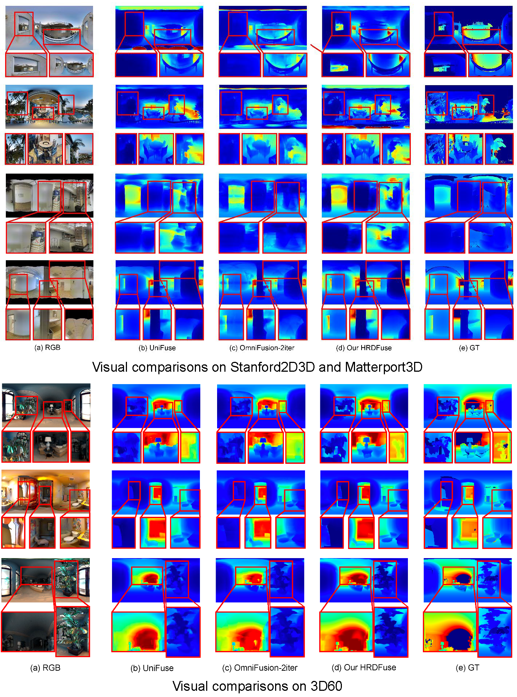
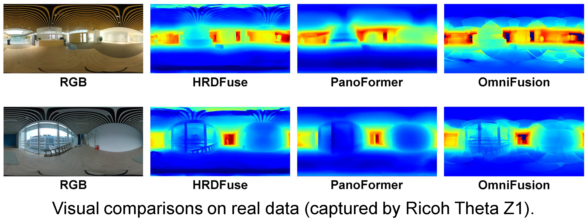

HRDFuse: Monocular 360° Depth Estimation by Collaboratively Learning Holistic-with-Regional Depth Distributions
-
Hao Ai
HKUST(GZ)
-
Zidong Cao
HKUST(GZ)
-
Yanpei Cao
ARC Lab, Tencent PCG
-
Ying Shan
ARC Lab, Tencent PCG
-
Addison Lin Wang
AI Trust, HKUST(GZ)
Dept. of CSE, HKUST
Abstract
Depth estimation from a monocular 360° image is a burgeoning problem owing to its holistic sensing of a scene. Recently, some methods, \eg, OmniFusion, have applied the tangent projection (TP) to represent a 360° image and predicted depth values via patch-wise regressions, which are merged to get a depth map with equirectangular projection (ERP) format. However, these methods suffer from 1) non-trivial process of merging plenty of patches; 2) capturing less holistic-with-regional contextual information by directly regressing the depth value of each pixel. In this paper, we propose a novel framework, HRDFuse, that subtly combines the potential of convolutional neural networks (CNNs) and transformers by collaboratively learning the holistic contextual information from the ERP and the regional structural information from the TP. Firstly, we propose a spatial feature alignment (SFA) module that learns feature similarities between the TP and ERP to aggregate the TP features into a complete ERP feature map in a pixel-wise manner. Secondly, we propose a collaborative depth distribution classification (CDDC) module that learns the holistic-with-regional histograms capturing the ERP and TP depth distributions. As such, the final depth values can be predicted as a linear combination of histogram bin centers. Lastly, we adaptively combine the depth predictions from ERP and TP to obtain the final depth map. Extensive experiments show that our method predicts more smooth and accurate depth results while achieving favorably better results than the SOTA methods.
Results on the benchmarkdataset: Stanford2D3D, Matterport3D and 3D60
Approach
Overview of our HRDFuse, consisting of three parts: feature extractors for both ERP and TP inputs, spatial feature alignment (SFA) module,
and collaborative depth distribution classification (CDDC) module.
As depicted in the framework figure, to exploit the complementary information from holistic context and regional structure, our framework simultaneously takes two projections of a 360° image, an ERP image and N TP patches, as inputs. For the ERP branch, an ERP image with the resolution of H x W is fed into a feature extractor, comprised of an encoder-decoder block, to produce a decoded ERP feature map FERP. For the TP branch, N TP patches are first obtained with gnomonic projection from the same sphere. Then, these TP patches are passed through the TP feature extractor to obtain 1-D patch feature vectors {Vn, n=1,..., N}, which are passed through the TP decoder to obtain the TP feature maps {FnTP}.
To determine and align the spatial location of each TP patch in the ERP space and avoid complex geometric fusion for overlapping areas between neighboring TP patches, we propose the spatial feature alignment (SFA) module to learn feature correspondences between pixel vectors in the ERP feature map FERP and patch feature vectors {Vn, n=1,..., N}. This way, we can obtain the spatially aligned index map M, recording the location of each patch in the ERP space.
Next, the index map M, ERP feature map FERP, and TP feature maps FnTP are fed into the proposed collaborative depth distribution classification (CDDC) module that accordingly outputs two ERP format depth predictions. In principle, the CDDC module first learns holistic-with-regional histograms to simultaneously capture depth distributions from the ERP image and a set of TP patches. Consequently, the depth distributions are then converted to depth values through a linear combination of bin centers. Lastly, the two depth predictions from the CDDC module are adaptively fused to output the final depth result. We now describe these modules in detail.
Results on Real Data
Demo with Our HRDFuse
BibTeX
@inproceedings{ai2023HRDFuse,
title={HRDFuse: Monocular 360° Depth Estimation by Collaboratively Learning Holistic-with-Regional Depth Distributions},
author={Hao Ai, Zidong Cao, Yan-pei Cao, Ying Shan, Lin Wang},
booktitle = {Proceedings of the IEEE/CVF Conference on Computer Vision and Pattern Recognition (CVPR)},
year={2023}
}